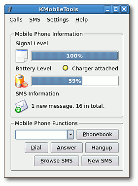
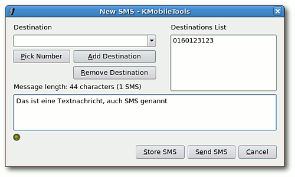

KMobileTools
Archivierte Anleitung
Dieser Artikel wurde archiviert, da er - oder Teile daraus - nur noch unter einer älteren Ubuntu-Version nutzbar ist. Diese Anleitung wird vom Wiki-Team weder auf Richtigkeit überprüft noch anderweitig gepflegt. Zusätzlich wurde der Artikel für weitere Änderungen gesperrt.
Zum Verständnis dieses Artikels sind folgende Seiten hilfreich:
Mit KMobileTools  lassen sich über eine simulierte serielle Schnittstelle
lassen sich über eine simulierte serielle Schnittstelle  einige Daten von Mobiltelefonen, wie z.B. Signalstärke und Akkuzustand abfragen. Außerdem kann man SMS am PC-Bildschirm lesen und schreiben und per Knopfdruck eine Nummer aus dem Telefonbuch des Mobiltelefons anwählen.
einige Daten von Mobiltelefonen, wie z.B. Signalstärke und Akkuzustand abfragen. Außerdem kann man SMS am PC-Bildschirm lesen und schreiben und per Knopfdruck eine Nummer aus dem Telefonbuch des Mobiltelefons anwählen.
Installation¶
Zunächst muss das Programm installiert werden. Danach wird eine serielle Schnittstelle angelegt, die bei einer Bluetooth-Verbindung über ein rfcomm-device eingerichtet wird. Seit Dapper Drake 6.06 ist KMobileTools in den Paketquellen verfügbar. Installiert [1] werden muss das Paket
kmobiletools (universe, [2])
Nach der Installation findet sich ein Eintrag für KMobileTools im GNOME-Menü unter "Anwendungen -> Zubehör".
Einrichtung¶
Das Programm kommuniziert per Bluetooth über ein rfcomm-device (simulierte serielle Schnittstelle) mit dem Mobiltelefon. Diese Schnittstelle muss zunächst eingerichtet werden. Dazu sucht man sich den Kanal (Channel) seines Telefons heraus, der den Dienst "Serial Port" anbietet. Wie das geht, steht hier. In unserem Beispiel kann wahlweise der Kanal 2 oder 3 benutzt werden.
Nun bindet man das Mobilgerät über seine Hardwareadresse und den gewünschten Kanal an die serielle Schnittstelle. Dies geschieht mit folgendem Befehl im Terminal [3]:
sudo rfcomm bind 0 00:0E:07:73:3C:B1 2
rfcomm steht hier für die serielle Schnittstelle über Bluetooth. Die Null steht für rfcomm0, also die erste eingerichtete Schnittstelle. Danach folgt die Hardwareadresse des Mobilgerätes (bitte hier die eigene einsetzen) und zum Schluss der zu verwendende Kanal, in diesem Fall Nummer 2. Ob alles geklappt hat, kann man mit dem Aufruf von
rfcomm
feststellen. Hier sollte nun folgende Ausgabe erscheinen:
rfcomm0: 00:0E:07:73:3C:B1 channel 2 clean
Das clean am Ende der Zeile gibt an, dass der Kanal im Moment nicht benutzt wird und somit frei ist. Startet man nun KMobileTools, so sucht das Programm zunächst nach der Schnittstelle /dev/mobile, die jedoch nicht vorhanden ist. Daher bricht es mit einer Fehlermeldung ab. Nun sieht man ein Konfigurationsfenster, bei dem man in der obersten Zeile das "Mobile Phone Device" wählen kann. Hier ändert man die Einstellung auf /dev/rfcomm0 und klickt unten auf "OK". Die restlichen Einstellungen kann man beibehalten. Nun sollte die soeben angelegte Schnittstelle gefunden werden.
Um die Verbindung über die serielle Schnittstelle dauerhaft zu aktivieren, so dass sie bei jedem Systemstart bereits eingerichtet wird, trägt man die entsprechenden Daten in der Datei rfcomm.conf ein. In der Datei findet man bereits ein Beispiel, das man nur noch entsprechend seiner eigenen Daten anpassen muss. Der Eintrag sollte etwa so aussehen:
rfcomm0 {
bind yes;
# Bluetooth address of the device
device 00:0E:07:73:3C:B1;
# RFCOMM channel for the connection
channel 2;
# Description of the connection
comment "K700i";
}Wichtig sind die öffnende und schließende geschweifte Klammer, sowie die Semikolons. Bei "comment" kann man eine beliebige Bezeichnung eingeben. Diese muss aber in Anführungszeichen eingeschlossen sein. Ob die Schnittstelle nach dem Start korrekt eingerichtet wurde, kann man wieder mit dem Befehl
rfcomm
überprüfen.
Anwendung¶
Hinweis:
Während der Nutzung von KMobileTools besteht eine dauerhafte Verbindung zwischen PC und Mobiltelefon. Daher kann vom Mobiltelefon aus keine weitere Aktion über Bluetooth ausgeführt werden, da die Funktion belegt ist.
 Nach dem Start sieht man das Hauptfenster (siehe Bild rechts). Leider ist die Oberfläche von KMobileTools bisher nur in englisch verfügbar. Man sieht die aktuelle Signalstärke und die verbleibende Akkuleistung, sowie die Anzahl der SMS auf dem Mobiltelefon. Außerdem wird angezeigt, ob das Gerät an eine Ladegerät angeschlossen ist. Über die Schaltflächen und das Menü kann man folgende Aktionen ausführen:
Phonebook - liest das Telefonbuch aus und speichert es
Dial - erlaubt das Wählen einer Nummer per Mausklick (am einfachsten aus dem Telefonbuch)
Answer - Nimmt einen eingehenden Anruf an (besonders bei Freisprecheinrichtungen interessant)
Hang up - Beendet die Verbindung
Browse SMS - Die SMS am Bildschirm lesen
New SMS - Eine neue SMS am PC schreiben und versenden
Das Hauptfenster lässt sich auch schließen und jederzeit wieder über das Telefonsymbol im KDE-Panel unten rechts bzw. GNOME-Panel oben rechts aufrufen. Mit einem rechten Mausklick auf dieses Symbol erhält man außerdem ein Kontextmenü, in dem die oben genannten Aktionen ebenfalls ausgeführt werden können. Dies ist sehr schnell und komfortabel.
Die Funktionen sollen nun im einzelnen erläutert werden. Mit einem Klick auf "Phonebook" kann man das Telefonbuch des Mobiltelefons auslesen. Hierbei hat man durch das Dropdown-Menü oben die Möglichkeit, die angezeigten Nummern einzugrenzen. Natürlich kann man auch nach Namen sortieren, indem man auf den Spaltenkopf "Name" klickt. Mit der Schaltfläche "Browse SMS" kann man den SMS-Speicher auslesen und die SMS am Bildschirm lesen. Außerdem lassen sich auch neue SMS mit der Tastatur schreiben und versenden.
 Dazu benutzt man die Schaltfläche "News SMS". Hier muss als "Destination" die Nummer des Zieltelefons angegeben werden. Mit "Pick Number" kann man nun eine Nummer aus dem (zuvor ausgelesenen) Telefonbuch auswählen und mit "Add Destination" zur "Destination List" hinzufügen. So kann man auch sehr einfach SMS an mehrere Personen versenden, indem man die entsprechenden Nummern alle zu der Liste hinzufügt. Beim Schreiben der SMS wird auch jeweils angezeigt, wie viele Zeichen man schon geschrieben hat. Das ist von Vorteil, da die Länge einer SMS ja in der Regel begrenzt ist (160 Zeichen?).
KMobileTools bietet außerdem die Möglichkeit, sich mit kleinen, aufpoppenden Hinweisfenstern über verschiedene Ereignisse informieren zu  lassen, die sich über den Menüpunkt "Configure Notifications" einstellen lassen (Beispiel siehe Bild). Hinweisfenster (wahlweise mit Ton) lassen sich einstellen für eine abgeschlossene Aufladung des Akkus, für eingehende SMS und Anrufe und für einen niedrigen Akku-Ladezustand. Dies scheint allerdings noch nicht so gut zu funktionieren, da der Akku mit einem Füllstand von 80% in manchen Fällen bereits als "low" gilt und ständig Meldungen kommen. Bisher ist auch keine Möglichkeit bekannt, wo man für diese Benachrichtigungen genauere Einstellungen vornehmen kann.
lassen, die sich über den Menüpunkt "Configure Notifications" einstellen lassen (Beispiel siehe Bild). Hinweisfenster (wahlweise mit Ton) lassen sich einstellen für eine abgeschlossene Aufladung des Akkus, für eingehende SMS und Anrufe und für einen niedrigen Akku-Ladezustand. Dies scheint allerdings noch nicht so gut zu funktionieren, da der Akku mit einem Füllstand von 80% in manchen Fällen bereits als "low" gilt und ständig Meldungen kommen. Bisher ist auch keine Möglichkeit bekannt, wo man für diese Benachrichtigungen genauere Einstellungen vornehmen kann.
- Erstellt mit Inyoka
-
 2004 – 2017 ubuntuusers.de • Einige Rechte vorbehalten
2004 – 2017 ubuntuusers.de • Einige Rechte vorbehalten
Lizenz • Kontakt • Datenschutz • Impressum • Serverstatus -
Serverhousing gespendet von